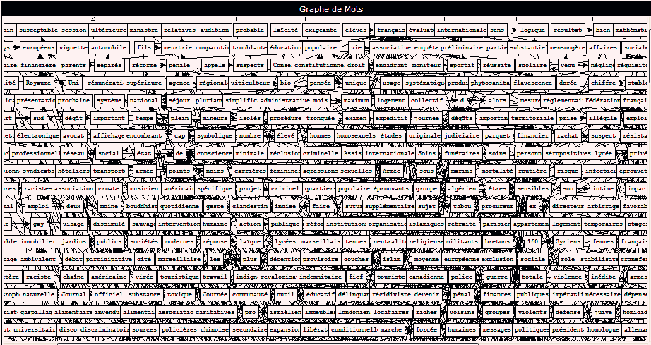
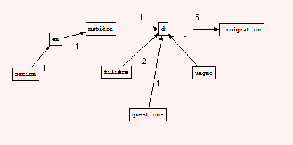
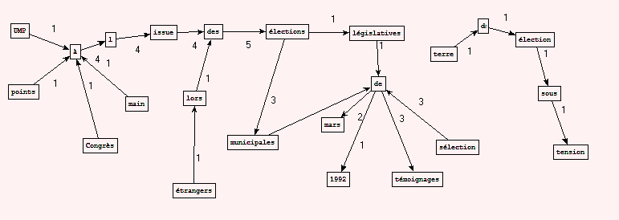
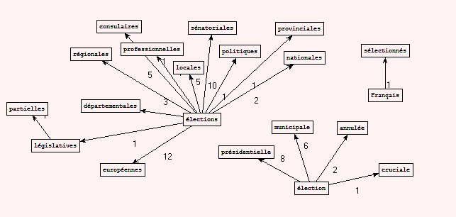

La BAO 4 consiste à faire une représentation de nos motifs syntaxiques en graphes avec les sorties de BAO précédente. Cette visualisation se fait par un programme qui s'appelle patron2graphe.exe, qui utilise des lignes de commande. Il est intégré dans le logiciel Trameur. Ceci permet de voir les mots qui mènent à plusieurs expressions et les différentes manières ou contextes dont un mot est employé dans la rubrique.
• Pour afficher tous les noeuds du graphe:
patron2graphe.exe "codagedes2fichiers" FichierEnEntree
• Avec uniquement des noeuds obtenus par filtrage prealable du motif dans les patrons:
patron2graphe.exe "codagedes2fichiers" FichierEnEntree FichierContenantLeMotif
• Le motif dans la forme d'un fichier texte peut contenir des expression régulières. Pour extraire toutes les formes correspondantes aux patrons choisis qui contiennent le mot “élection”, le fichier motif.txt serait comme suit :
MOTIF=[Eé]lection.+
ou plus précis: MOTIF=(\bélection[s].+?\b)|(\blocale\b)
On va vois pas mal de choses analysables. Voici un aperçu pour les résultats de la rubrique "SOCIETE" avec aucun motif en argument:
Quelques exemples avec des fichiers de motifs:
MOTIF= [Ii]mmigration.+ dans la rubrique SOCIETE en fichier NOM PREP NOM
MOTIF=\bélection\b dans la rubrique POLITIQUE en fichier NOM PREP NOM
MOTIF=\bélection\b dans la rubrique POLITIQUE en fichier NOM ADJ
La dernière graphe est presque une représentation de mode de scrutin et de différentes élections en France. D'après nos connaissance, ce que nous (aux yeux des étrangers) pouvons interpréter est que: La France est une démocratie représentative (élection sénatoriale, consulaire…). Les représentants des branches législatives y sont élus directement ou indirectement par les citoyens français (Français sélectionnés). En fait, pour compléter, on sait que les élections locales compris les élections municipales, départementales, régionales. Les élections nationales sont l’élection présidentielle, les élections législatives et les élections sénatoriales…Les élections européennes ont eu lieu en mai 2014, du coup, le RSS 2014 ont mentionné 12 fois cette élection. En regardant la graphe au-dessus, le parti UMP est aussi mentionné dans le motif cherché. Cette graphe donne simplement les noms de l’élection, on ne voit pas trop de relation entre eux. On est sur, si on fait la recherche avec des motifs plus avancés, on trouvera des informations autour de ce sujet plus intéressantes.
{kind=link}
{kind=link}
{kind=link}
{kind=link}